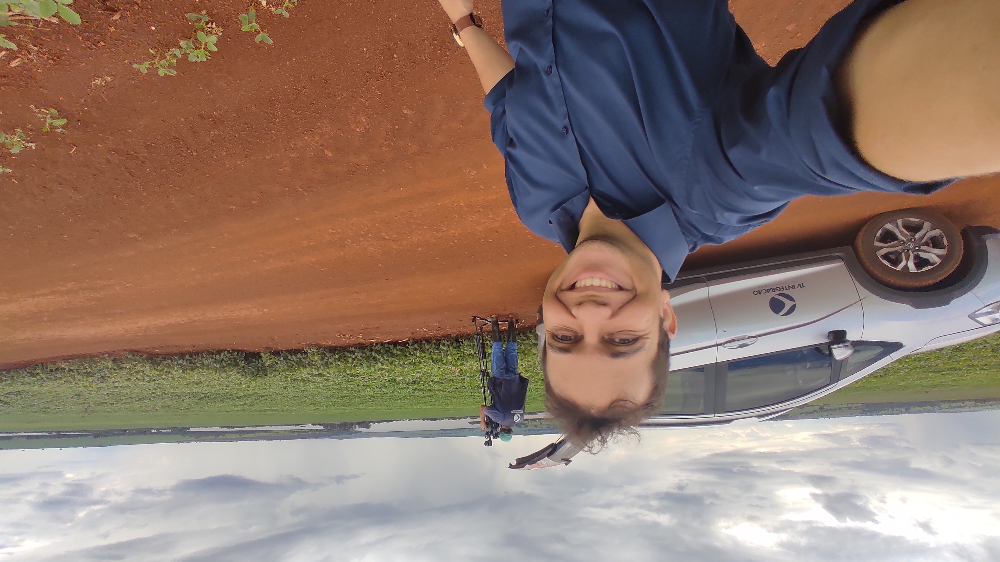

Sobre mim
Profissional com mais de 20 anos de experiência no mercado de comunicação, com atuação em jornalismo, produção de conteúdo, gestão de equipes e organização de processos. Ao longo da carreira, desenvolveu forte capacidade analítica, visão estratégica e foco em eficiência operacional, com experiência no uso de métricas, estruturação de fluxos e entrega de produtos informativos. Hoje, atua como jornalista em Uberaba e também está em transição para a área de tecnologia, cursando Análise e Desenvolvimento de Sistemas e desenvolvendo aplicações web próprias, com foco em soluções práticas, automação e usabilidade. Reúne experiência consolidada de mercado com formação técnica em desenvolvimento, com objetivo de atuar como desenvolvedor web júnior.
Este site reúne sua trajetória profissional, certificações e um portfólio de desenvolvimento web com projetos publicados. Para conhecer melhor a formação técnica, acesse a página de certificações; para ver trabalhos e referências, visite a seção de links e projetos.
Experiência Profissional
-
-
Rádio 89 Maravilha
- Produção de conteúdos jornalísticos
- Apuração e redação de notícias
- Elaboração de pautas e entrevistas
-
Chefe de Redação - ISTV
- Coordenação da produção jornalística
- Planejamento editorial
- Supervisão de equipe e conteúdo
-
Assessor de Imprensa - Campanha Elisa Araújo
- Relacionamento com a mídia
- Produção de releases
- Organização de entrevistas
-
-
-
Supervisor Administrativo - Sesc
- Gestão de equipe
- Acompanhamento de KPIs
- Planejamento estratégico
-
Supervisor de Jornalismo - TV Integração
- Coordenação de equipe de reportagem
- Edição e revisão de pautas
- Organização de escalas de trabalho
-
Professor de Kenjutsu - Ogawa Ryu
- Coordenação da sede em Uberaba-MG
- Aulas práticas aos sábados
- Aulas teóricas online
-
Formação Acadêmica
| Curso | Instituição | Período |
|---|---|---|
| Análise e Desenvolvimento de Sistemas | Uniube | 2025 - 2027 |
| MBA em Recursos Humanos | Uniararas | 2018 - 2020 |
| Marketing Digital | Digital House | 2021 - 2022 |
| Gestão Estratégica em Mkt e Comunicação | IPG/USP | 2005 - 2006 |
| Comunicação Social - Jornalismo | Uniube | 2001 - 2004 |
Formação Complementar
As formações complementares fortalecem a base técnica para atuação em desenvolvimento web, integração de ferramentas digitais e criação de soluções voltadas à usabilidade e ao desempenho de produtos online.
| Cursos e Certificações | Competências |
|---|---|
|
|